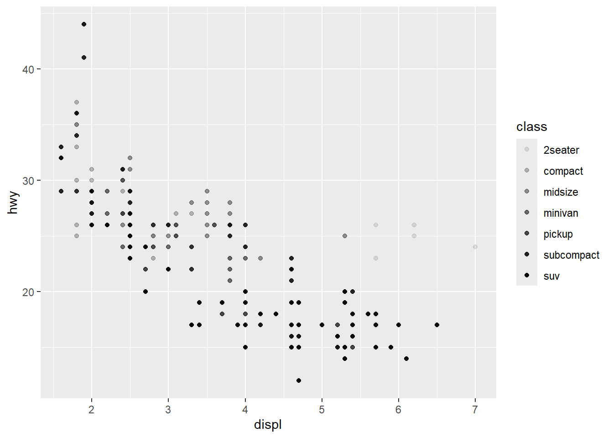
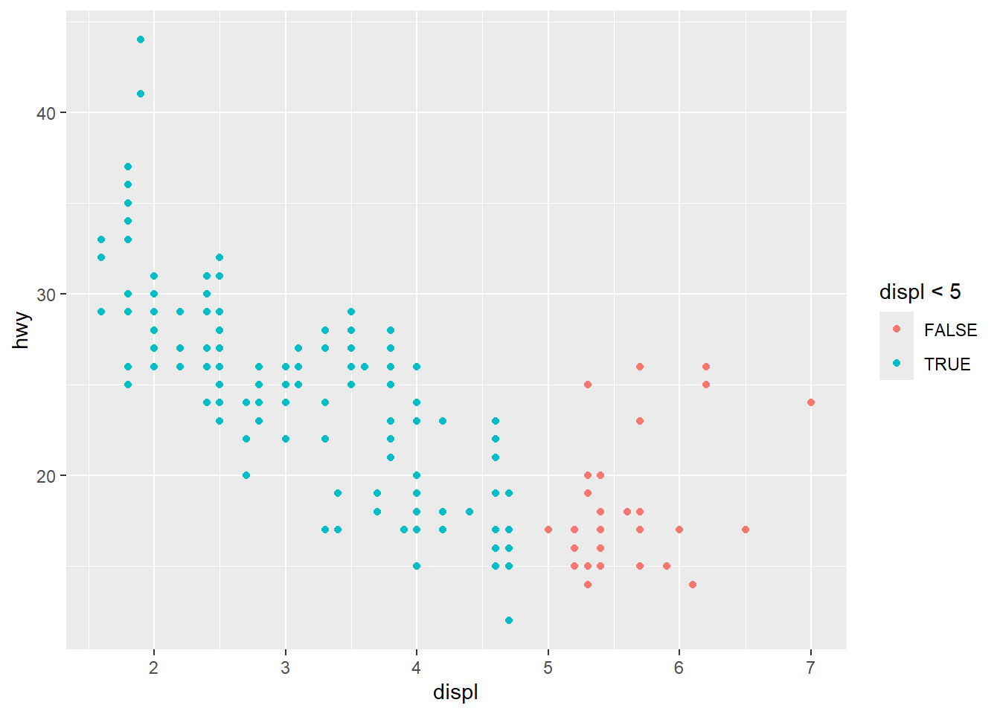
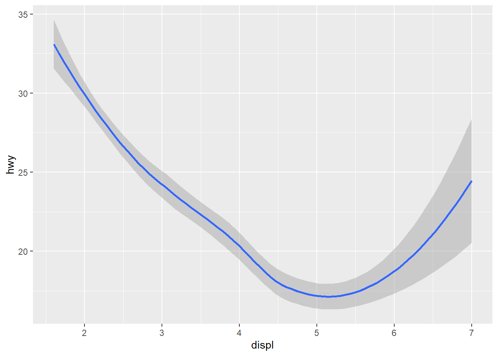

getwd()[1] "C:/Users/magda/OneDrive/Documents/MB5370/MB5370_M1_clean/code"This workshop was intended to introduce the basics of RStudio, including how to use it, how to write code, and how to debug code.
RStudio is an integrated development environment (IDE) for R, which provides a user-friendly interface for writing and running R code. This can be used as a base for learning programming techniques.
The working directory is the folder where RStudio will look for files to read and where it will save files that you create. It is important to know how to check and set the working directory to ensure that you are working in the correct location. To check the working directory:
getwd()[1] "C:/Users/magda/OneDrive/Documents/MB5370/MB5370_M1_clean/code"RStudio can solve commands after running the code. Additionally, adding comments to the codes will make it easier to remember what it is used for. Comments can be made by using # and will not affect the code.
Commands will also need to be finished, otherwise they will be marked with an error outlining the issue. For instance:
6* will show an error, as it is an unfinished command 6%2 will show a syntax error
1+2[1] 31:30 # makes a sequence of numbers [1] 1 2 3 4 5 6 7 8 9 10 11 12 13 14 15 16 17 18 19 20 21 22 23 24 25
[26] 26 27 28 29 30This will allow us to understand how data is stored in RStudio.
The assignment operator (<-) can be used to assign a value to an object. The Python equivalent (=) can also be used in RStudio but the initial one is preferred.
Though a few rules have to be kept in mind: - When naming an object it cannot have numbers or special symbols (incl. spaces) at the beginning - Object names are case sensitive
Some error examples: 01_age <- 25 (starts with number) !_age <- 25 (no special symbols) age bob <- 25 (no spaces) Age <- 41 (cases matter) ‘age bob’ <- 25 (no spaces, but with back ticks works)
When extra detail is needed in the title, the use of underscores or hyphens is encouraged when possible. For example age_in_years or age_yrs better than age.
age <- 25
first_name <- 'Bill'
age+1[1] 26age+age[1] 50# EXERCISE
A <- 15+25.1+20.25
B <- 98
A + B[1] 158.35Built-in functions allow many things, ranging from simple things like rounding, sampling or reporting things.
Some examples of functions allow to round up and down, including up to how many decimal places that number should be round up to.
years_old <- 25.7
round(years_old) #rounds up
floor(years_old) #rounds down
years_old <- 25.765
round(years_old, 2) #comma after object to specify argumentTo discover what each function does and how to use it the following code can be used. Using the function round as an example.
?round #goes to help
args(round) #args in the Consolefunction (x, digits = 0, ...)
NULLExercise using the function paste to construct a sentence,
?paste # goes to help
years_old_2 <- 26
Miroslava_age <- paste("Miroslava is", years_old_2, "years old")
Miroslava_age[1] "Miroslava is 26 years old"Being able to read code is the best way to fix errors. These errors should be fixed as one goes along. Additionally, the ability of reading code, allows predicting the behaviour of the code before it has been run.
For example this issue is presented if the programming language is treated as an excel spreadsheet.
grade <- 55
total <- grade +10
print(total)[1] 65grade <- 90
print(total) # value of total in a spreadsheet will be 100, but in programming a variable holds the value it was assigned (65)[1] 65Which can be fixed by the following code.
total <- grade+10
print(total) # executed in the way it was defined[1] 100One should aim to predict the behaviour of the code before running it. For example, what would the following code do?
p <- 2
z <- 5
out <- p*z # there was an a instead of z #error due to undefined variable
out <- p*z #fixed error #value is expected to be 10
print(out) #expectation is met[1] 10Error report often give a hint to help understand what is going on. These errors can then be looked up on Google or StackOverflow.
Testing out functions is also a good idea to test your results will do what they are supposed to, and ensures the variable is the right type. For example:
x <- 1
is.character(x) #states that it is not a character[1] FALSEis.numeric(x) #states that it is numeric[1] TRUEThe following exercise is used to figure out what is wrong with the code given by identifying and commenting on the nature of the problem. *Note that the problems have been fixed.
my_quiz <- c("uno",
"dos",
"tres",
"cuatro", #comma is missing
"cinco") #function names characters
print (my_quiz) #misspelled 'quiz'. prints out result[1] "uno" "dos" "tres" "cuatro" "cinco" str(my_quiz) # shows its a character variable and sequence chr [1:5] "uno" "dos" "tres" "cuatro" "cinco"length(my_quiz) #function len does not exist. should be length.[1] 5Understanding the data types is vital and will help in a range of different areas. There are built-in functions to examine objects, it includes the following: class() - type of object it is typeof() - object’s data type length() - length of the object attributes() - detects metadata presence
There are six basic data types, with the top four being the most important ones; Character, numeric, integer, logical, complex and raw.
The following shows examples of the top four data types.
AA <- 9
class(AA) #numeric
Name <- 'Miroslava'
class(Name) #character
BB <- 1:5
class(BB) #integer
x=1
y=2
CC <- y>x
class(CC) #logicalData structures can be formed by combining elements of data types. The following are the different types of data structures: - atomic vector - list - matrix - data frame - factors
With vectors being the most common data type, these are a collection of elements most commonly of the type. Also note that elements inside the vectors need to be of the same type. For instance:
y <- c(1,2,3) # make vector with three elements in it
z <- c('sarah','tracy','john') #vector full of character elements
# Interrogating the type of character vector results:
class(z) # character
class(y) #numericLists on the other hand allow values inside them to be of several different types. For example:
x <- list(1, 'a', TRUE)
x[[1]]
[1] 1
[[2]]
[1] "a"
[[3]]
[1] TRUEx[[2]] # retrieve individual elements using double square brackets to reference their index[1] "a"They are two-dimensional or rectangular data files. Data frames are like spreadsheets, storing data in the same format as excel, with rows and columns. Columns hold elements of the same type.
The following is an example of how to make a data frame:
# making data.frame
my_dataframe <-data.frame(no=c(1,2,3), c('tracey', 'john', 'pete'), c(TRUE, FALSE, TRUE))
my_dataframe no c..tracey....john....pete.. c.TRUE..FALSE..TRUE.
1 1 tracey TRUE
2 2 john FALSE
3 3 pete TRUEstr(my_dataframe) # R makes guess at type of data of each column'data.frame': 3 obs. of 3 variables:
$ no : num 1 2 3
$ c..tracey....john....pete..: chr "tracey" "john" "pete"
$ c.TRUE..FALSE..TRUE. : logi TRUE FALSE TRUESometimes the guess R makes at what type of data we have is not what we want. In this instance we want to change ‘no’ from numeric to a factor.
Factor is a categorical type, this will tell R that the first column is actually storing a category rather than a real continuous number. This can be changed as follows:
my_dataframe$no = as.factor(my_dataframe$no) # to change from numeric to factor
str(my_dataframe)'data.frame': 3 obs. of 3 variables:
$ no : Factor w/ 3 levels "1","2","3": 1 2 3
$ c..tracey....john....pete..: chr "tracey" "john" "pete"
$ c.TRUE..FALSE..TRUE. : logi TRUE FALSE TRUEThey are a collection of functions made for a specific purpose which can be downloaded and used.
To download a package the following code is used. in this case with tidyverse as an example:
install.packages(‘tidyverse’)
Once installed, there is no need to re-install again. To load the package it can be as followed. Tidyverse also has a range of other packages within it that can be used.
library(tidyverse) # load into current workspace
library(ggplot2)
?ggplot2 #creates elegant data visualisations using the grammar of graphicsThis workshop was intended to introduce the basics of ggplot2, which is a package used for data visualization. It is based on the grammar of graphics, which is a system for describing and building graphs.
library(tidyverse) #loads necessary libraries
mpg #built-in data frame found in ggplot2The following graph will display a negative relationship between engine size and fuel efficiency.
ggplot(data=mpg) +
geom_point(mapping = aes(x = displ, y = hwy)) #'displ' is size of the engine, 'hwy' the fuel efficiency
ggplot(data = mpg ) creates an empty graph. Adding the function geom_point() adds a layer of points to the plot, this argument is always paired with aes(), while the arguments ‘x’ and ‘y’ within it specify the variables to map in each axis.
Using a template will improve the development of plots when using ggplot2. geom functions with a collection of mappings will dictate how the plot looks.
The following template supports the development of the foundations of data visualization. Complexity can be added to more advanced visualizations.
ggplot(data = ) +
ggplot() #creates an empty plot windowggplot(data = mpg) +
geom_point(mapping = aes(x = displ, y = hwy)) #adds data and axisAesthetic variables such as size, shape, and colour can be added to the already plotted objects.
Information about the plot can be conveyed through the applied aesthetics. This can be done by naming the aesthetic variable inside aes().
For instance changing colour by class.
ggplot(data = mpg) +
geom_point(mapping = aes(x = displ, y = hwy, colour = class))
Changing point size by class.
ggplot(data = mpg) +
geom_point(mapping = aes(x = displ, y = hwy, size = class))
Changing the points transparency by class * Warning on aesthetics.
ggplot(data = mpg) +
geom_point(mapping = aes(x = displ, y = hwy, alpha = class)) #alpha aesthetic dictates the transparency
Changing the point shape by class. * Warning on aesthetics.
ggplot(data = mpg) +
geom_point(mapping = aes(x = displ, y = hwy, shape = class))
Properties can also be set manually, such as a number or colour. For instance making all points red.
ggplot(data = mpg) +
geom_point(mapping = aes(x = displ, y = hwy, colour = "red"))
However this does not show anything about the nature of the plotted variable.
Additional aesthetics that can be set manually include: - Name of a colour as a character string. - Size of a point in mm. - Shape of point as a number.
Mapping the aesthetic other than a variable name such as the following.
ggplot(data = mpg) +
geom_point(mapping = aes(x = displ, y = hwy, colour = displ < 5)) #displays whether engine size is larger than 5 (TRUE) or smaller than 5 (FALSE)
Being able to debug problems as you go is an essential part of coding.
For instance a common problem on ggplot is having the + on the wrong place. It should always be placed at the end of the line not the start of the line.
ggplot(data = mpg) + #should be placed here not on the following line
geom_point(mapping = aes(x = displ, y = hwy))Facets are commonly used in ggplot2 to break a single complex plot into many sub-plots (panels).
Faceting can be done by using facet_wrap(), and is in the function of a formula, where ~ dictates the variable to subset your data with.
ggplot(data = mpg) +
geom_point(mapping = aes(x = displ, y = hwy)) +
facet_wrap(~class, nrow = 2) #nrow splits it into the set number of rows. in this case 2
To split into more than one variable use facet_grid(). Using ~ to split two variables.
ggplot(data = mpg) +
geom_point(mapping = aes(x = displ, y = hwy))+
facet_grid(drv ~ cyl)Using a . to not facet in the rows or column dimension.
ggplot(data = mpg) +
geom_point(mapping = aes(x = displ, y = hwy))+
facet_grid(. ~ cyl)A variety of visual objects can be used to represent your data. The geom object in the plot will represent the data, which can be changed through the geom function on the plot template.
For instance displaying data as points.
ggplot(data = mpg) +
geom_point(mapping = aes(x = displ, y = hwy))
However, ggplot can use different geom objects to represent the data. For example: - Bar plots - geom_bar() - Histogram - geom_histogram() - Line charts - geom_line() - Boxplots - geom_boxplot()
Now we’ll display the data as a smooth line.
ggplot(data = mpg) +
geom_smooth(mapping = aes(x = displ, y = hwy))
Additionally, the line type can be changed, by using a variable to control it.
ggplot(data = mpg) +
geom_smooth(mapping = aes(x = displ, y = hwy, linetype = drv, colour = drv))This plot separates the cars into three lines based on their ‘drv’ which is their front wheel, rear wheel or 4wd value.
Moreover, objects can be grouped by categorical variables like species, sex or site by using the group argument.
ggplot(data = mpg) +
geom_smooth(mapping = aes(x = displ, y = hwy, group = drv, colour = drv),
show.legend = FALSE)
Additionally, ggplot2 can be used to making plots with multiple geoms by adding them together.
ggplot(data = mpg) +
geom_point(mapping = aes(x = displ, y = hwy))+
geom_smooth(mapping = aes(x = displ, y= hwy))While this works well, both geom lines are a duplicate. Therefore, if one of the variables wants to be changed, it will have to be done in multiple locations.
This would not be ideas as it increases the chances of making an error. This can be fixed by making global mappings applied to every subsequent geom.
ggplot(data = mpg, mapping = aes(x = displ, y = hwy)) +
geom_point()+
geom_smooth()
Mappings can still be used to reduce duplication in code, which is useful for making changes in point styles. They can be used in specific layers to display different aesthetics.
ggplot(data = mpg, mapping = aes(x = displ, y = hwy)) +
geom_point(mapping = aes(colour = class))+ # points styled by class
geom_smooth() # line is not
The filter (class = “subcompact”) selects a subset of the data and only plots that subset.
ggplot(data = mpg, mapping = aes(x = displ, y = hwy)) +
geom_point(mapping = aes(colour = class))+
geom_smooth(data = filter(mpg, class =="subcompact"), se = FALSE) #filter shows only a small subset of the dataset
The following graphs shows a higher diamond availability with higher quality cuts compared to lower quality cuts.
ggplot(data = diamonds)+
geom_bar(mapping = aes(x = cut))While the diamonds data set does not contain count as a variable, bar charts, histograms and frequency polygons calculate new values to plot unlike scatter plots which use the raw values in the data set.
This algorithm used to calculate new values is called statistical transformation (stat). Helps visualize data without needing to fit statistical models or summarize data sets.
Both geoms and stats can be used interchangeably, just as seen below.
ggplot(data = diamonds)+
stat_count(mapping = aes(x = cut))
It is important to understand defaults and how these can also be changed as this can have implications on the results
For instance default stats (counts) can be overridden by identity, which is a variable’s raw value. For instance:
demo <- tribble (
~ cut, ~freq,
"Fair", 1610,
"Good", 4906,
"Very Good", 12082,
"Premium", 13791,
"Ideal", 21551
)
demo# A tibble: 5 × 2
cut freq
<chr> <dbl>
1 Fair 1610
2 Good 4906
3 Very Good 12082
4 Premium 13791
5 Ideal 21551ggplot(data = demo)+
geom_bar(mapping = aes(x = cut, y = freq), stat = "identity")
Default mapping can also be overridden from transformed variables to aesthetics. For instance displaying a bar chart of the proportion of total diamonds in the data set rather than the count.
ggplot(data = diamonds)+
geom_bar(mapping = aes(x = cut, y = stat(prop), group = 1))Warning: `stat(prop)` was deprecated in ggplot2 3.4.0.
ℹ Please use `after_stat(prop)` instead.
Being transparent about uncertainties and limitations in the data is good practice.
ggplot(data = diamonds)+
stat_summary(
mapping = aes(x = cut, y = depth),
fun.min = min,
fun.max = max,
fun = median
)
Using commands like colour or fill to change the aspect of bar colours can boost the way information is conveyed.
ggplot(data = diamonds)+
geom_bar(mapping = aes(x = cut, colour = cut))ggplot(data = diamonds)+
geom_bar(mapping = aes(x = cut, fill = cut))Now using the variable clarity.Which is done with a position argument.
Making position arguments allows to customize plots. For instance using ‘identity’ for raw data, ‘fill’ changes heights, and ‘dodge’ forces ggplot to not stack things on top of each other.
By using position = “identity, objects can be placed exactly where it falls in the context of the graph. This is important for scatter plots but in bar plots it shows too much information.
ggplot(data = diamonds)+
geom_bar(mapping = aes(x = cut, fill = clarity))
ggplot(data = diamonds, mapping = aes(x = cut, fill = clarity))+
geom_bar(alpha = 1/5, position = "identity") # alters transparency
#| output: false
ggplot(data = diamonds, mapping = aes(x = cut, colour = clarity))+
geom_bar(fill = NA, position = "identity") #colours bar outlines with no colour fill.
ggplot(data = diamonds)+
geom_bar(mapping = aes(x = cut, fill = clarity), position = "fill") # works like staking but all bars are at the same height.ggplot(data = diamonds)+
geom_bar(mapping = aes(x = cut, fill = clarity), position = "dodge") #places objects beside one anotherggplot(data = mpg)+
geom_point(mapping = aes(x = displ, y = hwy), position = "jitter") #adds some random noise to each point, avoiding over-plotting with overlapping points
Updated ggplot2 template for making plots.
ggplot(data = ) +
This workshop was intended to start using Git and GitHub to manage code and collaborate with others.
To set up your credentials and configuring a personal access token the following was used:
To do this a suitable folder needs to be created to store the data analysis work. The URL of the repo needs to be copied and a new project should be created in R Studio using the version control option, then Git, and then pasting the URL.
Create a new folder on files and a GitHub repository on your profile.
Then create a new project in RStudio linked to GitHub. By pasting the URL of the repository that was previously created. This will allow to track the project and make changes to it.
Any scrips or .Rmd files related to this project should be stored in this folder. This will allow to track the changes made to the files and share them with others.
A Git window will appear with files from this project. Different symbols will appear next to these files; A (added), D (deleted), M (modified), R (renamed) and ? (untracked).
Some files should not be tracked by Git, such as large data files, or files with sensitive information. To do this a .gitignore file needs to be created in the project folder. This file will contain the names of the files that should not be tracked by Git.
To commit changes, the Git window needs to be opened and the files that have been changed need to be selected. Then a commit message needs to be written describing the changes made. Finally, the commit button needs to be clicked to save the changes.
To pull changes from GitHub, the Git window needs to be opened and the pull button needs to be clicked. This will download the changes from the GitHub repository to the local computer.
To push changes to GitHub, the Git window needs to be opened and the push button needs to be clicked. This will upload the changes to the GitHub repository.
We need to incorporate Git and GitHub with the following steps:
Edit > Save > Stage > Commit > Pull > Push … and so on.
This Workshop was about integrating AI into your coding workflow throguh the use of GitHub Copilot and the chattr package.
GitHub Copilot functions as a text-prediction engine.
Instead of writing the code manually, the goal is to practice using inline text comments to guide Copilot into building code chunks.
Using the Palmer Penguins dataset (palmerpenguins), records biological and environmental metrics for three penguin species in the Palmer Archipelago, Antarctica.
library(tidyverse)
library(palmerpenguins)# Create a ggplot scatter plot using the penguins dataset.
# Plot bill_length_mm on the x-axis and bill_depth_mm on the y-axis.
# Color points by species and use geom_point with size 3.
# Add a minimal theme and clean labels.
ggplot(data = penguins) +
geom_point(mapping = aes(x = bill_length_mm, y = bill_depth_mm, colour = species), size = 3) +
theme_minimal() +
labs(x = "Bill Length (mm)", y = "Bill Depth (mm)", title = "Penguin Bill Dimensions by Species")
To test how inline autocomplete adapts to instructions.
Creating a distribution check:
# Create a boxplot using the penguins dataset.
# Compare the flipper_length_mm across the three penguin species.
# Facet the data by island, using custom color palettes.
ggplot(data = penguins) +
geom_boxplot(mapping = aes(x = species, y = flipper_length_mm, fill = species)) +
facet_wrap(~ island) +
scale_fill_manual(values = c("Adelie" = "lightblue", "Chinstrap" = "lightgreen", "Gentoo" = "lightpink")) +
theme_minimal() +
labs(x = "Penguin Species", y = "Flipper Length (mm)", title = "Flipper Length Distribution by Species and Island")
The chattr package is fully integrated within RStudio, securely reading metadata from the active environment to provide contextual support.
To do this we need to generate an API Key and Securely store it.
Exercise by using this prompt “Show me how to load the built-in iris dataset and use ggplot2 to build a scatter plot of Sepal.Length versus Sepal.Width colored by Species.”
# Using the penguins dataset load the built-in iris dataset
# build a scatterplot for Sepal.Length vs Sepal.Width
# colour the points by Species.
ggplot(data = iris) +
geom_point(mapping = aes(x = Sepal.Length, y = Sepal.Width, colour = Species)) +
theme_minimal() +
labs(x = "Sepal Length", y = "Sepal Width", title = "Iris Sepal Dimensions by Species")
This is how we filter outliers, classify categorical variables, or tag environments by environmental stress limits
The classic base R conditional structure screens a single value at a time.
The basic anatomy uses round brackets (), for logical conditions use curly braces {} to enclose the code block that executes when the condition is met.
For example:
# Simple Example: Checking Sea Surface Temperature (SST)
sst <- 30.2
if (sst > 29.5) {
print("Warning: Marine heatwave threshold exceeded!")
} else {
print("SST remains within baseline parameters.")
}[1] "Warning: Marine heatwave threshold exceeded!"Base R ‘if’ and ‘if-else’ statements are not designed to handle vectorised operations, which are common in data analysis.
Allows for efficient vectorised conditional logic.
# Load tidyverse (if not already loaded)
library(tidyverse)
# Sample coral data
coral_monitoring <- tibble(
site = c("Site_A", "Site_B", "Site_C"),
depth_m = c(12, 35, 8)
)
# Classify depth using if_else
coral_monitoring <- coral_monitoring %>%
mutate(zone = if_else(depth_m > 30, "Deep Reef", "Shallow Reef"))Task: finding out what the function mutate(), and the symbol %>% do.
?mutate # adds new variables or transforms existing ones
?`%>%` # pipe operator, allows chaining of commands in a readable wayAllows for multiple conditions to be evaluated in a single statement. clean sequential evaluation layout using tildes ~
coral_monitoring <- coral_monitoring %>%
mutate(reef_category = case_when(
depth_m < 10 ~ "Lagoon / Flats",
depth_m <= 30 ~ "Crest / Slope",
depth_m > 30 ~ "Mesophotic / Deep",
TRUE ~ "Unclassified" # Catch-all remainder
))Write an R script that initialises a tibble
# Create a tibble with sample SST data
# Create a tibble named marine_stations with a salinity column with values [35, 28, 32, and 12]
# Use pipe operator and mutate() combined with case_when() to create a new column named environment_type
# classify values below 15 as "Estuarine", values between 15 and 30 as "Brackish", and values above 30 as "Marine"
marine_stations <- tibble(
station_id = c("Station_1", "Station_2", "Station_3", "Station_4"),
salinity = c(35, 28, 32, 12)
)
marine_stations <- marine_stations %>%
mutate(environment_type = case_when(
salinity < 15 ~ "Estuarine",
salinity >= 15 & salinity <= 30 ~ "Brackish",
salinity > 30 ~ "Marine",
TRUE ~ "Unclassified"
))
marine_stations# A tibble: 4 × 3
station_id salinity environment_type
<chr> <dbl> <chr>
1 Station_1 35 Marine
2 Station_2 28 Brackish
3 Station_3 32 Marine
4 Station_4 12 Estuarine Automation means instructing R to repeat a task across multiple items without manually copy-pasting.
This repeats a code chunk for each element in a designated sequence.
Classic loop anatomy:
for (year in 2020:2024) {
print(paste("Processing climate data for year:", year))
}[1] "Processing climate data for year: 2020"
[1] "Processing climate data for year: 2021"
[1] "Processing climate data for year: 2022"
[1] "Processing climate data for year: 2023"
[1] "Processing climate data for year: 2024"To track real-world data, loops can iterate over file directories:
# Loop across index sequences
transect_lengths <- c(50, 100, 25, 75)
for (i in seq_along(transect_lengths)) {
print(paste("Transect number", i, "measures", transect_lengths[i], "metres."))
}[1] "Transect number 1 measures 50 metres."
[1] "Transect number 2 measures 100 metres."
[1] "Transect number 3 measures 25 metres."
[1] "Transect number 4 measures 75 metres."For-loops are a core programming construct, they also require the management of index variables (i) and explicitly set up empty ‘containers’ to store results.Resulting in verbose code and hidden bugs.
The purrr package uses map functions, mapping a specific operation onto every item in list or vector, ensuring automatic matches to the output.
Examples of functions and their expected output data type: - map() - Returns a flexible List sturcture - map_dbl() - Returns a vector of decimals/ numeric values - map_chr() - Returns a vector of text strings/characters - map_df() - Returns a combined data frame/ tibble
Example to see the difference between standard for-loop and purrr equivalent.
Using a standard for-loop:
site_areas <- c(144, 400, 625)
results <- numeric(length(site_areas)) # Must build an empty container first
for(i in seq_along(site_areas)) {
results[i] <- sqrt(site_areas[i]) # Manually manage index and assignment
}The purrr equivalent:
library(purrr)
# Map directly and define your expected output type explicitly
mapped_results <- map_dbl(site_areas, sqrt)combining purrr pipelines inside data frames to split analysis across separate groups:
# Iterate a summary function over split lists of data
iris %>%
split(.$Species) %>%
map(~summary(.x))$setosa
Sepal.Length Sepal.Width Petal.Length Petal.Width
Min. :4.300 Min. :2.300 Min. :1.000 Min. :0.100
1st Qu.:4.800 1st Qu.:3.200 1st Qu.:1.400 1st Qu.:0.200
Median :5.000 Median :3.400 Median :1.500 Median :0.200
Mean :5.006 Mean :3.428 Mean :1.462 Mean :0.246
3rd Qu.:5.200 3rd Qu.:3.675 3rd Qu.:1.575 3rd Qu.:0.300
Max. :5.800 Max. :4.400 Max. :1.900 Max. :0.600
Species
setosa :50
versicolor: 0
virginica : 0
$versicolor
Sepal.Length Sepal.Width Petal.Length Petal.Width Species
Min. :4.900 Min. :2.000 Min. :3.00 Min. :1.000 setosa : 0
1st Qu.:5.600 1st Qu.:2.525 1st Qu.:4.00 1st Qu.:1.200 versicolor:50
Median :5.900 Median :2.800 Median :4.35 Median :1.300 virginica : 0
Mean :5.936 Mean :2.770 Mean :4.26 Mean :1.326
3rd Qu.:6.300 3rd Qu.:3.000 3rd Qu.:4.60 3rd Qu.:1.500
Max. :7.000 Max. :3.400 Max. :5.10 Max. :1.800
$virginica
Sepal.Length Sepal.Width Petal.Length Petal.Width
Min. :4.900 Min. :2.200 Min. :4.500 Min. :1.400
1st Qu.:6.225 1st Qu.:2.800 1st Qu.:5.100 1st Qu.:1.800
Median :6.500 Median :3.000 Median :5.550 Median :2.000
Mean :6.588 Mean :2.974 Mean :5.552 Mean :2.026
3rd Qu.:6.900 3rd Qu.:3.175 3rd Qu.:5.875 3rd Qu.:2.300
Max. :7.900 Max. :3.800 Max. :6.900 Max. :2.500
Species
setosa : 0
versicolor: 0
virginica :50
Prompt the following into the engine: “I have a list of three vectors containing fish count data. Write a for-loop to calculate the mean of each, and then show me the exact parallel way to do it using purrr’s map_dbl function.”
# Sample data: list of three vectors with fish counts
fish_counts <- list(
lake1 = c(5, 6, 7, 8),
lake2 = c(10, 12, 14, 16),
lake3 = c(2, 3, 5, 7)
)
# For-loop method
means_loop <- numeric(length(fish_counts))
for (i in seq_along(fish_counts)) {
means_loop[i] <- mean(fish_counts[[i]])
}
means_loop[1] 6.50 13.00 4.25# purrr's map_dbl method
library(purrr)
means_map <- map_dbl(fish_counts, mean)
means_maplake1 lake2 lake3
6.50 13.00 4.25 Functions package your logic into clear, named, reusable assets.
The function consists of a Name, Arguments (input varables), and a Body (execution logic wapped inside curly braces).
Always test functions in a clean local environment, ensuring they rely strictly on the arguments passed directly into them, rather than accidentally grabbing random background objects floating in global R environment.
# Function Definition
calculate_coral_mortality <- function(initial_count, surviving_count) {
# Logic safety switch using our conditional tools!
if (initial_count <= 0) {
stop("Initial count must be greater than zero.")
}
mortality_rate <- (initial_count - surviving_count) / initial_count
return(mortality_rate)
}
# Utilizing your custom function
calculate_coral_mortality(initial_count = 120, surviving_count = 84)[1] 0.3# Build a custom function named convert_temp_c_to_f
# This function should accept a single argument representing temperature in Celcius.
# The function should perform the math conversion: F = (C * 9/5) + 32
# Include a safety check using an 'if' statement that halts execution via stop() if the entered value is below absolute zero (-273.15°C).
# Test your function with a sample input of 25°C and then with an invalid input of -300°C to see the error handling in action.
convert_temp_c_to_f <- function(temp_c) {
if (temp_c < -273.15) {
stop("Temperature cannot be below absolute zero (-273.15°C).")
}
temp_f <- (temp_c * 9/5) + 32
return(temp_f)
}
# Test the function with valid input
convert_temp_c_to_f(25)[1] 77Challenge 1: Nested Multi-Vector Iteration
# Given a vector of raw survey counts counts <- c(15, 24, 8, 42) and a vector of species-specific scaling factors factors <- c(1.2, 0.8, 2.5, 1.1)
# Write a mapping statement using map2_dbl()
# The function should iterate through both vectors simultaneously, applying the scaling factor to each corresponding count.
# Do not use a manual index loop
library(purrr)
counts <- c(15, 24, 8, 42)
factors <- c(1.2, 0.8, 2.5, 1.1)
scaled_counts <- map2_dbl(counts, factors, ~ .x
* .y)
scaled_counts[1] 18.0 19.2 20.0 46.2